Análisis en el cambio de postura de los estudiantes en caso Amanda
Author
Cristopher Urbina
Published
Invalid Date
Introducción
Los casos analizados corresponden a la última aplicaciín del caso amanda durante el año 2023 en el curso CD1201, y durante el año 2024 en el curso CD1100.
Objetivo
El objetivo de este análisis consiste en determinar la influencia de la fase grupal en el cambio de postura de los estudiantes en el caso Amanda.
Análisis exploratorio
Dentro de las siguientes figuras se muestra la longitud de los chats y comentarios de los estudiantes en el caso Amanda.
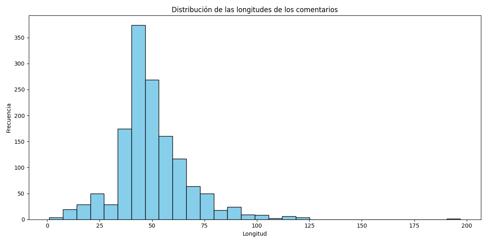 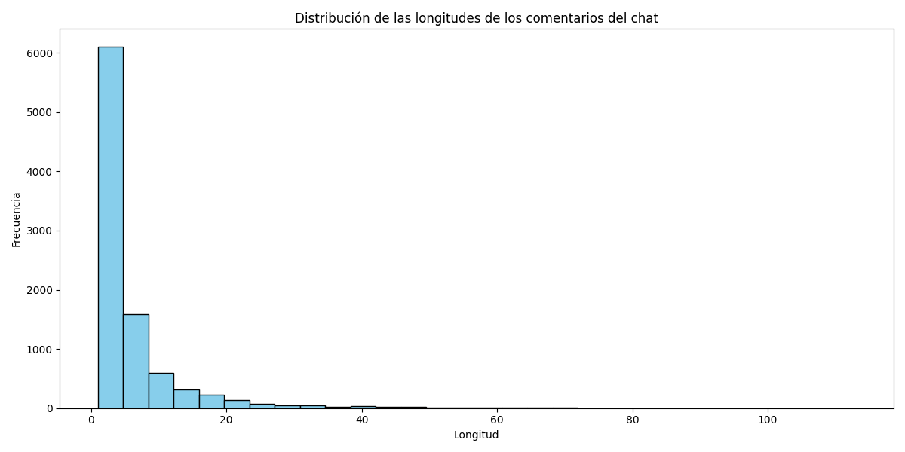
De esto obtenemos que la longitud del argumento esta en torno a la media de 40 caracteres (que es el mínimo requerido por la aplicación), mientras que la longitud de los chats esta en torno a los 5 caracteres.
Por otro lado, tambien es posible ver las palabras y frases más frecuentes tanto en los comentarios como en los chats.
Unigramas
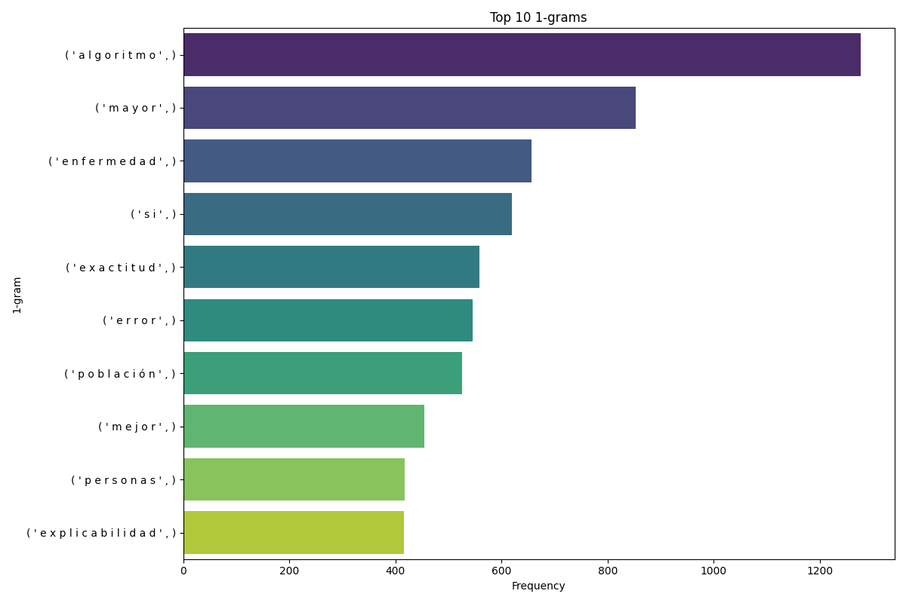
Palabras más frecuentes en los comentarios
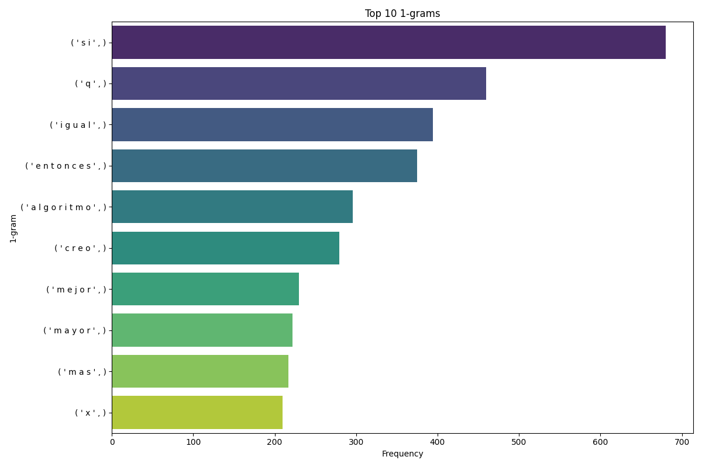
Palabras más frecuentes en los chats
Bigramas
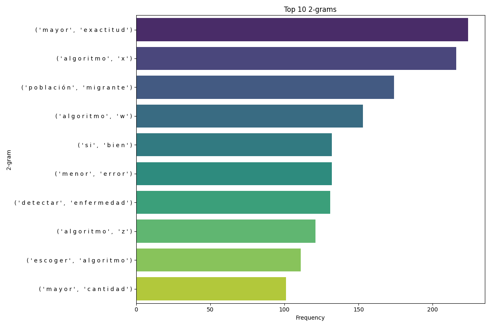
Bigramas más frecuentes en los comentarios
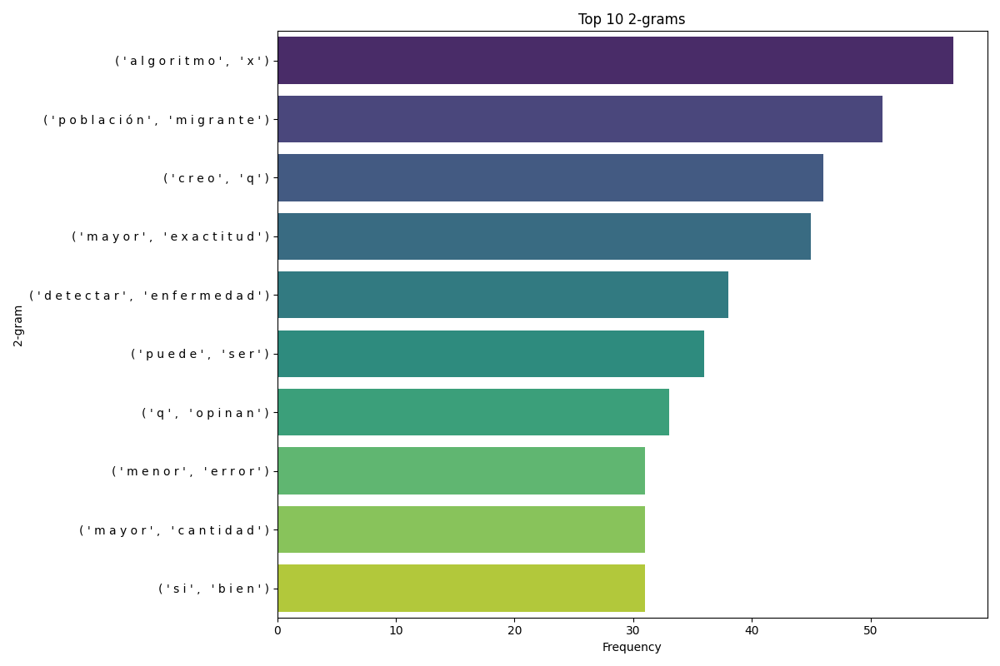
Bigramas más frecuentes en los chats
Trigramas
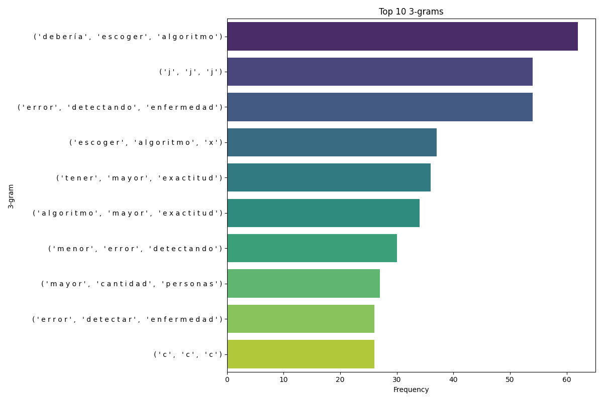
Trigramas más frecuentes en los comentarios
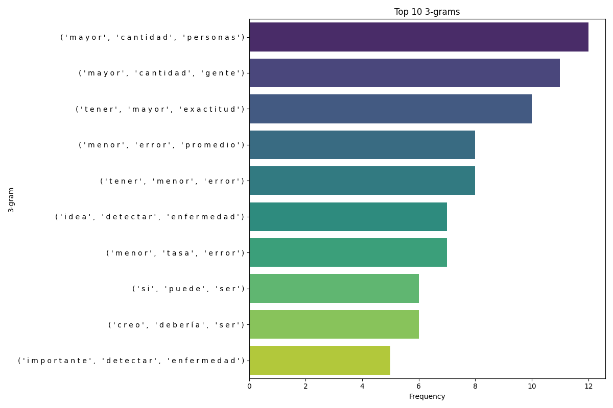
Trigramas más frecuentes en los chats
Fourgramas
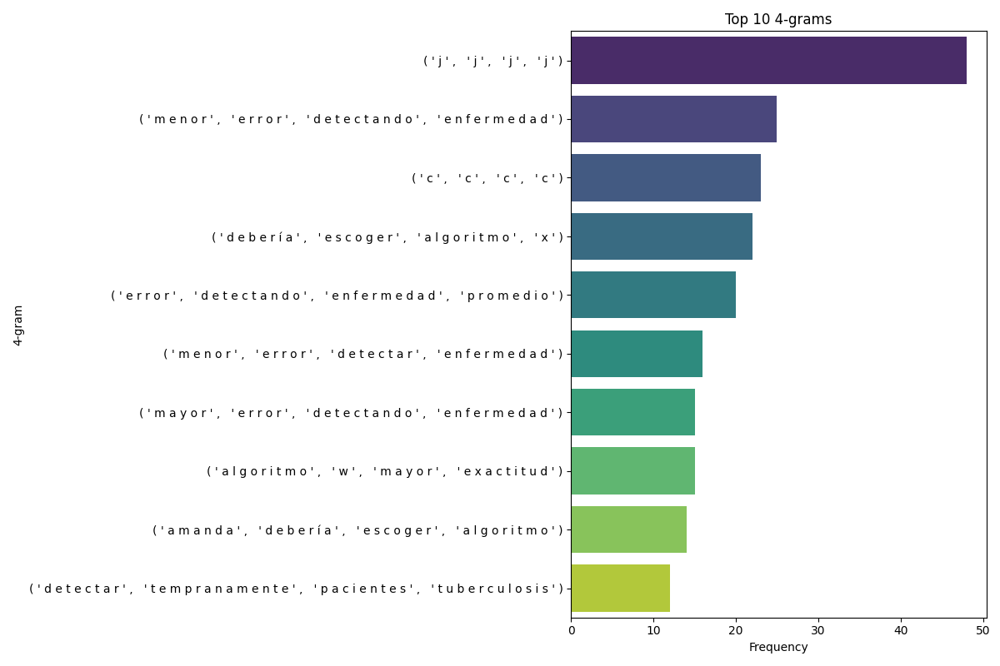
Fourgramas más frecuentes en los comentarios
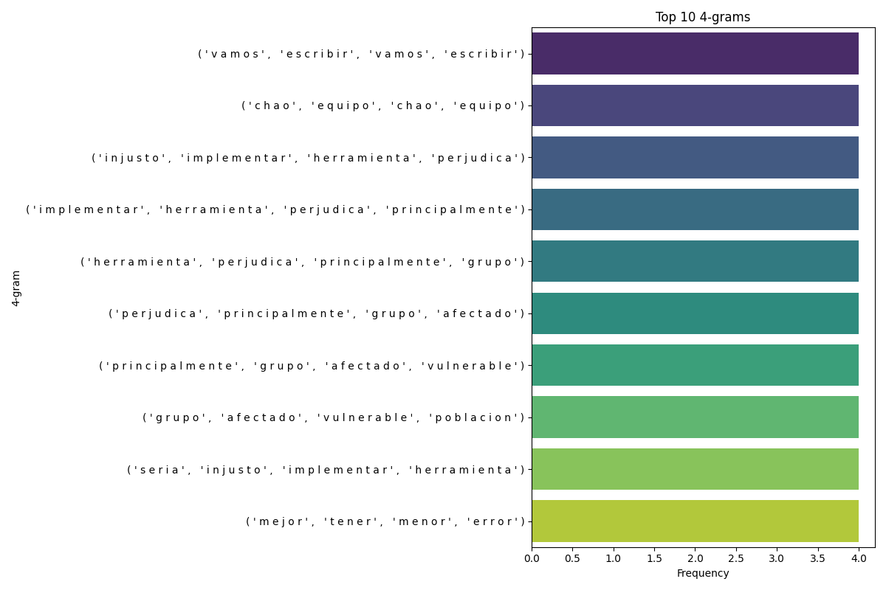
Fourgramas más frecuentes en los chats
Columnas creadas
Para el análisis de los datos se crearon las siguientes columnas:
chat_messages: Mensajes en el chat agrupados en solo un mensaje.
chat_mesagges_length: Cantidad de mensajes en el chat.
cambio_postura: Cambio de postura en los estudiantes.
analisis: 1 si el estudiante realizó un análisis, 0 en caso contrario.
razones: 1 si el estudiante presentó razones, 0 en caso contrario.
contraargumentos: 1 si el estudiante presentó contraargumentos, 0 en caso contrario.
punto_vista: 1 si el estudiante presentó un punto de vista, 0 en caso contrario, es decir, una mirada propia.
Otras columnas creadas son: el argumento durante la fase 1 y final.
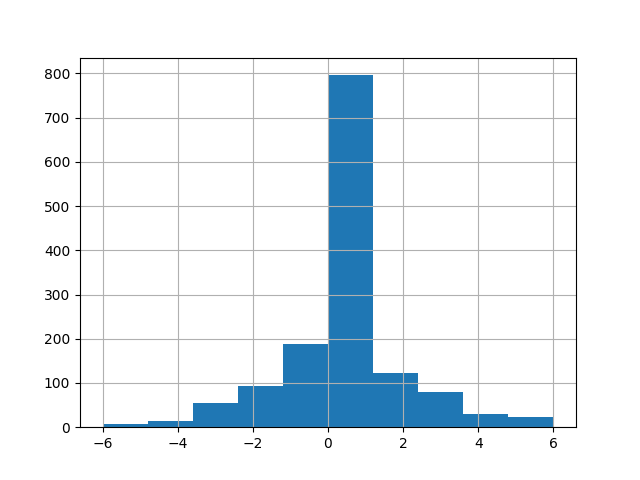
Distribución cambios de postura
Proceso de creación de columnas respecto a las partes del argumento
Se esta utilizando inteligencia artificial generativa, en especifico Gemini, la IA de Google, para analizar los argumentos presentados por los estudiantes en el caso Amanda.
La instrucción que esta dando buenos resultados es la siguiente:
Instrucciones para la Clasificación de Comentarios por Aspecto de Argumento
Objetivo
El objetivo de esta tarea es clasificar cada comentario en relación a los diferentes aspectos de un argumento: análisis, razones, contraargumentos y punto de vista. Esto permitirá entender cómo los participantes construyen y justifican sus argumentos sobre la elección de algoritmos.
Rúbrica
Para cada aspecto del argumento, se asignará una de las siguientes etiquetas al comentario:
1: El comentario contiene información relevante para este aspecto del argumento.
0: El comentario no contiene información relevante para este aspecto del argumento.
No aplica (N/A): El comentario es irrelevante o no se puede evaluar en relación a este aspecto.
Aspectos del Argumento
Análisis: El comentario descompone y examina los elementos clave de la tesis o hipótesis, identificando los diferentes aspectos del problema y sus implicaciones.
Razones: El comentario proporciona justificaciones, evidencias, datos o razonamientos lógicos que respaldan la postura del autor.
Contraargumentos: El comentario presenta objeciones, posibles problemas, desventajas o alternativas a la postura del autor.
Punto de Vista (Conclusión): El comentario establece claramente la postura final del autor sobre qué algoritmo es preferible, basándose en el análisis y las razones presentadas.
Procedimiento
Leer el comentario detenidamente: Asegúrate de comprender el significado completo del comentario antes de clasificarlo.
Evaluar cada aspecto del argumento:
Análisis: ¿El comentario identifica y examina los componentes clave de la decisión (exactitud, explicabilidad, impacto en diferentes poblaciones)?
Razones: ¿El comentario ofrece justificaciones o evidencias para apoyar la elección del algoritmo? ¿Se mencionan principios éticos, datos o consecuencias?
Contraargumentos: ¿El comentario considera posibles problemas, limitaciones o perspectivas alternativas?
Punto de Vista (Conclusión): ¿El comentario establece claramente qué algoritmo es preferible según el autor y por qué?
Asignar las etiquetas: Para cada aspecto del argumento, asigna la etiqueta “1”, “0” o “N/A” según corresponda.
Ejemplo
Comentario: “El algoritmo X es preferible porque, aunque tiene un mayor error en la detección en población migrante, este error no es tan significativo. Además, el algoritmo X tiene un menor error promedio en la detección de la enfermedad en la población general, lo cual es más importante.”
Análisis: 1 (el comentario examina los errores en diferentes poblaciones)
Razones: 1 (se justifica la preferencia por el menor error promedio)
Contraargumentos: 1 (se reconoce el mayor error en población migrante)
Punto de Vista: 1 (se concluye que el algoritmo X es preferible)
Salida
El resultado (tu respuesta) de la clasificación será una tabla donde cada fila representa un comentario y cada columna representa un aspecto del argumento, con las etiquetas correspondientes. De tal manera que se genere un dataframe. No des explicaciones, solo clasifica.
Con lo anterior se tendría un dataframe resultante con las siguientes columnas:
import pandas as pddf = pd.read_csv("/home/crisu/Proyectos/WorkProjects/ethics/datos/processed/amanda_procesado.csv")df.head()
id
user_id
team_id_x
name
rut
gender
df
title
opt_left
opt_right
...
chat_comments
numero_mensajes_chat
cambio_postura
ind1
group
ind2
analisis
razones
contraargumentos
punto_vista
0
70104
10972
NaN
Valentina Bravo
22079948-4
F
1
[Proporcione argumentos para justificar su res...
Algoritmo X: menor error detectando la enferme...
Algoritmo Y: mayor error detectando la enferme...
...
[START_COMMENT] Hola, que pusieron?? primero q...
6.0
0
1
3
1
1
1
0
1
1
70105
10981
NaN
Mateo Bilbao
21925577-2
M
2
[Proporcione argumentos para justificar su res...
Algoritmo W: mayor exactitud y menor explicabi...
Algoritmo Z: menor exactitud y mayor explicabi...
...
[START_COMMENT] Hola [END_COMMENT] [START_COMM...
6.0
0
3
3
3
0
1
0
1
2
70106
10981
NaN
Mateo Bilbao
21925577-2
M
1
[Proporcione argumentos para justificar su res...
Algoritmo X: menor error detectando la enferme...
Algoritmo Y: mayor error detectando la enferme...
...
[START_COMMENT] Hola [END_COMMENT] [START_COMM...
6.0
0
2
2
2
1
0
0
1
3
70108
10965
NaN
Valentina Schulz
22020667-k
F
1
[Proporcione argumentos para justificar su res...
Algoritmo X: menor error detectando la enferme...
Algoritmo Y: mayor error detectando la enferme...
...
[START_COMMENT] hello [END_COMMENT] [START_COM...
6.0
-2
5
3
3
0
0
0
0
4
70107
10972
NaN
Valentina Bravo
22079948-4
F
2
[Proporcione argumentos para justificar su res...
Algoritmo W: mayor exactitud y menor explicabi...
Algoritmo Z: menor exactitud y mayor explicabi...
...
[START_COMMENT] 2?? [END_COMMENT] [START_COMME...
13.0
1
1
3
2
1
1
1
1
5 rows × 36 columns
Análisis de resultados preliminares
Para el análisis de los resultados preliminares se utilizó un modelo basado en arboles de decisión.
La precisión es la proporción de predicciones correctas entre todas las predicciones realizadas por el modelo. El recall es la proporción de predicciones correctas entre todas las predicciones correctas que se podrían haber hecho. El f1-score es la media armónica entre la precisión y el recall. El soporte es el número de instancias de cada clase en el conjunto de datos.
Los resultados preliminares indican que el modelo actual no logra predecir el cambio de postura de los estudiantes en el caso Amanda utilizando los predictores disponibles. Esto sugiere que el análisis de los argumentos presentados por los estudiantes aún no está completo y necesita una mayor profundidad.
Trabajo Futuro
Para mejorar el desempeño del modelo, es esencial concluir el análisis de los comentarios en ind1 e ind2, evaluando la complejidad de los argumentos según las categorías de argumentación: análisis, razones, contraargumentos y punto de vista.
Actualmente, se esta utilizando inteligencia artificial generativa para llevar a cabo un análisis más detallado de los argumentos presentados por los estudiantes en el caso Amanda. Esta tecnología permitirá una evaluación más precisa de la calidad y relevancia de los argumentos.
Además, se está trabajando en la optimización del modelo de clasificación para predecir el cambio de postura de los estudiantes. Un aspecto clave será integrar los análisis mencionados para ajustar el modelo de manera efectiva. En el futuro, se implementarán modelos interpretables que ayudarán a comprender los factores que influyen en el cambio de postura. Estos modelos permitirán obtener mejores resultados y facilitarán la determinación de la influencia de la fase grupal en el cambio de postura de los estudiantes.
También podría ser beneficioso incorporar los comentarios representados numéricamente como predictores adicionales.